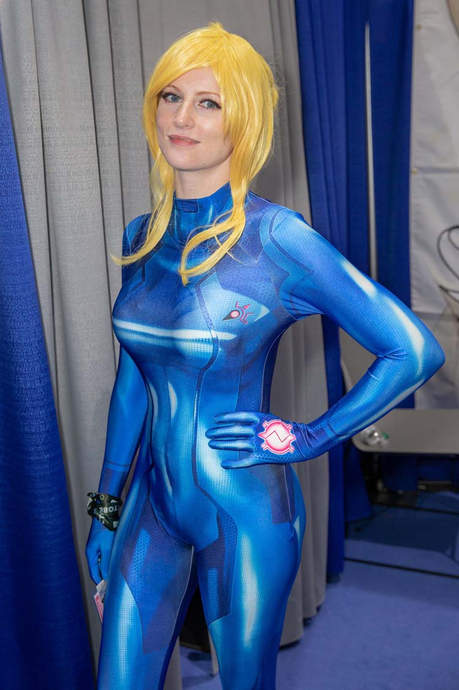

Accueil - Action Sport We would like to show you a description here but the site won’t allow us.
SPORTSQUÉBEC Bienvenue sur le site d'Action Sport. Créée en 1993, l’a.s.b.l. Action Sport est spécialisée dans l’organisation d’animations sportives sous toutes ses formes : stages sportifs et créatifs, cours et activités parascolaires, fêtes d’anniversaires, journées sportives pour les écoles, et plein d’autres encore !
ADM Sport - motocross | motoneige | quad Mon Sport Santé PACA recense toutes les structures labellisées Sport Santé de la région Provence-Alpes-Côte d'Azur. Trouvez les structures près de chez vous !
Sport En France SPORTSQUÉBEC, Corporation privée, dans une approche globale de la pratique sportive, assume le leadership du sport fédéré au Québec par la promotion et la défense des intérêts de la collectivité sportive ainsi que par la gestion de programmes sportifs et ce, aux niveaux québécois et canadien.
Twitter Le Centre sportif ETS, qui est situé près du centre-ville, offre des activités sportives individuelles et de groupe.
Allard Sport Equipement Arlon - Votre spécialiste en ... En raison d’un incident technique chez notre hébergeur, le site de Sport en France n’est pas accessible pour le moment. Vous pouvez néanmoins continuer à suivre la chaîne en direct
Dream Team - RMC SPORT ADM Sport - Tout pour vos besoins en moto, motocross et motoneige Accessoires, équipements, pièces, mode et entretien mécanique *
ÉTS Centre sportif GO Sport : magasins de sport. Vélos, skis, articles et matériel de sport pour la randonnée, la musculation, le fitness, le tennis, le running, les sports d'équipe. Trouvez les magasins proches de chez vous !
Achetez tous vos articles de sport et équipements sportifs ... Il y va du dynamisme de notre sport ! Pas insurmontable. Les règles sanitaires sont essentielles mais ne sont pas insurmontables. Les Bretons et notamment Sportbreizh ont prouvé l’an passé leur faculté d’adaptation. Il faut donc démontrer aux organisateurs qu’ils peuvent facilement respecter ces règles, d’autant que nos licenciés ...

Menu Mon magasin Mon compte 0 Mon panier Nouveautés nouveautés Tout voir chaussures chaussures tout voir enfant femme homme sports sports tout voir fitness - musculation football running randonnée sports d'équipe sports de raquette vêtements vêtements tout voir enfant femme homme marques marques Tout voir nike adidas asics puma reebok athli-tech arena Tous les sports Tous les sports Tout voir Vélos Vélos Tout voir Vélos Vélos à assistance électrique Accessoires Vélos Composants vélos Equipement Cycliste Fitness - Musculation Fitness - Musculation Tout voir Fitness Fitness Appareils de fitness Accessoires Vêtements Chaussures Electro-stimulation Musculation - Crosstraining Musculation - Crosstraining Machines et fonte Accessoires Nutrition Sportive Vêtements Chaussures Yoga - Gym douce Yoga - Gym douce Vêtements Tapis Accessoires Marques Boxe Boxe Gants Sacs de frappe Vêtements Chaussures Protections Running Running Tout voir Chaussures Vêtements Mesure de la performance Trail Accessoires Marques Football football Tout voir Paris-Saint-Germain Clubs Nations Chaussures équipements Survêtements Accessoires Sports d'Hiver Sports d'Hiver Tout voir Tenues Après skis Skis Chaussures de ski Raquettes à Neige Casques Masques Snowboard Luges Glisse urbaine et hoverboards Glisse urbaine et hoverboards Tout voir Trottinettes Rollers Skates Hoverboards Protections de glisse urbaine Trampolines sports d'équipe sports d'équipe Tout voir Football Basketball Rugby Handball Volley Football américain Sports de raquettes Sports de raquettes Tout voir Tennis Badminton Tennis de table Squash sports d'extérieur Sports d'extérieur Sports d'eau Randonnée Trampolines Escalade Golf Plus de sport plus de sport Tout voir natation - piscine tennis sports de combat danse equitation jeux yoga mode et loisirs mode et loisirs Tout voir chaussures femme chaussures femme Tout voir sneakers - mode multisport chaussures ouvertes tongs et claquettes chaussures homme chaussures homme Tout voir sneakers - mode multisport chaussures ouvertes tongs et claquettes chaussures enfant chaussures enfant Tout voir sneakers - mode multisport chaussures ouvertes tongs et claquettes chaussures bébé accessoires chaussures accessoires chaussures Tout voir chaussettes adulte chaussettes enfant entretien semelles lacets vêtements femme vêtements femme Tout voir vestes et parkas sweats, survêtements et polaires t-shirt & polos brassières leggings et collants joggings et pantalons shorts et bermudas robes maillots de bain vêtements homme vêtements homme Tout voir vestes et parkas sweats, survêtements et polaires t-shirt & polos leggings et cuissards joggings et pantalons shorts et bermudas sous-vêtements maillots de bain vêtements enfant vêtements enfant Tout voir fille (4 à 16 ans) garçon (4 à 16 ans) bébé (0 à 3 ans) accessoires textile accessoires textile Tout voir sacs et besaces bonnets et chapkas adulte chapeaux et casquettes adulte chaussettes adulte écharpes adulte gants adulte bonnets et chapkas enfant chapeaux et casquettes enfant chaussettes enfant gants enfant accessoires accessoires Tout voir accessoires multisport accessoires multisport Tout voir audio - vidéo bracelets coques de protection téléphone lunettes mesure de la performance montres orientation produits technologiques recharge - énergie récompenses Accessoires Adulte Accessoires Adulte Tout voir Bonnets Casquettes Echarpes Gants Chaussettes Autres accessoires Accessoires Enfant Accessoires Enfant Tout voir Bonnets Gants Echarpes Casquettes Chaussettes nutrition sportive nutrition sportive Tout voir bien-être acides aminés boosters & pre-workout gainers protéines sèche & minceur soin - protection du sportif soin - protection du sportif Tout voir bien être protection soin sacs & besaces sacs & besaces Tout voir sac de sport sac à dos sac de voyage bananes portefeuilles sacs besace high-tech high-tech Tout voir bien être et santé connectée bien être et santé connectée tout voir ceintures de massage electro-stimulation balances électroniques stations météo connectées tensiomètres loisir-outdoor loisir-outdoor Tout voir boussoles - talkies walkies caméras sport déplacements urbains drones gps - montre gps musique mesure de la performance mesure de la performance Tout voir cardio-fréquencemètres ceintures cardio compteurs vélo montres connectées montres de sport podomètre - altimètre trackers d'activité marques marques Tout voir fitbit garmin polar sigma suunto tomtom withings samsung pnj marques marques Tout voir nike adidas asics athlitech babolat care columbia converse eider ellesse fila garmin homcom le coq sportif millet mizuno moma bikes new balance the north face proform puma quiksilver reebok rossignol salomon scrapper slendertone tecnifibre timberland Under Armour up2glide wanabee Promotions Promotions Tout voir Promotions du moment Promotions du moment tout voir tous les sports fitness - musculation football running sport d'hiver randonnée sports d'équipe sports de raquette Promotions mode Promotions mode tout voir chaussures vêtements accessoires destockage destockage tout voir tous les sports chaussures vêtements accessoires marques marques Tout voir nike adidas asics puma reebok fila the north face Trouver ma chaussure idéale ! Go sport et moi Go sport et moi Go sport le Club Go sport le Club Les avantages Rejoindre le Club Programme Mercure Conseils Conseils Magazines Coaching Articles GO Sport En magasin En magasin Infos pratiques Livraison en magasin Réservation en magasin Carte cadeau Aide et infos Aide et infos une question ? Où est ma commande ? Livraison Retours Catalogues GO SPORT Partenaire Shopping en sécurité Retrait 2h en magasin GO Sport Montagne Programme Mercure Opération "Les Jours GO Sport" J'en profite !
A LA UNE
Homme Femme Enfant
Nos sports
Vélos Fitness Running Randonnée Football Tous nos sports